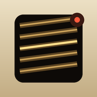
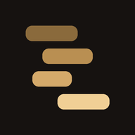

Runs in the browser
Instruments
Two tools that make sound. Open one, then add it to your home screen — it gets its own icon and runs without the browser around it.

OMNISTRUM
Omnichord-style synth: chord grid, strum plate, eight voices, rhythm and bass sequencer.
Play
Modal Chords
Seven modes, twelve roots, the diatonic chord family — voicings, progressions, ear training, MIDI export.
StudyTo install: on iPhone open in Safari and tap Share → Add to Home Screen. On Android, Chrome menu → Install app. On desktop, the install icon in the address bar. Both work offline after the first visit.